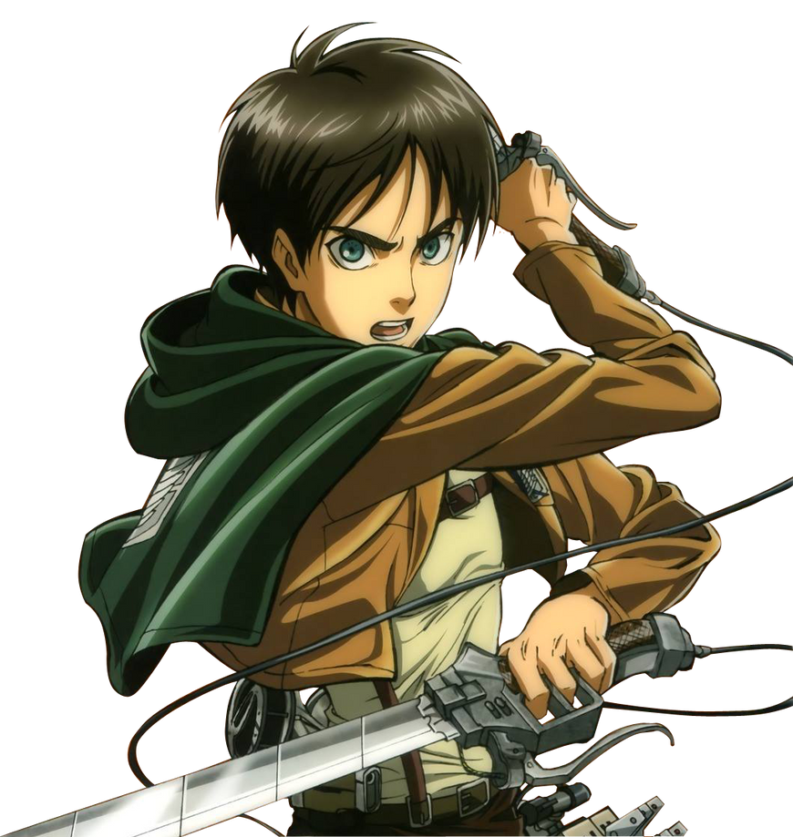

1. Crea un botón que cambie de color cuando esté en estado :hover.
2. Usa :target para mostrar un mensaje oculto al hacer clic en un enlace.
Haz clic aquí para ver el mensaje
3. Da un estilo especial al primer hijo de un contenedor usando :first-child.
Parrafo Primer Hijo
Este es el segundo parrafo y no va a tomar el estilo.
Esto sucede ya que el primer parrafo es el primer hijo de la clase "contenedor".
4. Estiliza los campos de formulario no válidos usando :invalid.
5. Resalta solo los campos de tipo email con :type.
6. Diseña un formulario donde el campo activo (:focus) cambie de borde.
7. Estiliza únicamente los elementos únicos de su tipo con :only-of-type.
Soy un "div" N°1.
Este parrafo tomará el estilo ya que el unico "P" entre los hermanos.
Soy un "div" N°2.
8. Aplica estilo solo al primer párrafo de una sección con :first-of-type.
Primer Parrafo de la clase ejercicio8
Otro parrafo...
Segundo Parrafo de la clase ejercicio8
Otro parrafo...
10.Diseña una navegación con sus etiquetas semanticas que cambie su color al pasar
sobre cada link.
11.Añade un icono antes de cada título con ::before.
12.Añade una línea decorativa después de cada párrafo con ::after.
Primer Parrafo despues de este texto aparecera una linea
Segundo parrafo tambien aparecera linea despues.
Ultimo parrafo de ejemplo.
13.Crea un botón con un efecto de sombra usando ::after
14.Añade comillas antes y después de un bloque de cita.
Una cita es cuando se refiere a unas palabras o frases que dijo que escrbio otra persona. En HTML se usa para una cita corta
15.Diseña un input que tenga un ícono dentro usando ::before.
16.Coloca una imagen de forma relative y mueve su posición sin alterar el flujo.

17.Crea una tarjeta que contenga un botón de eliminar con absolute
Producto destacado
Este es un ejemplo de tarjeta con un botón de eliminar posicionado en la esquina.
18.Haz una barra de navegación fija en la parte superior (fixed).
Ya esta en la parte de arriba ya que se debe poner el la parte de arriba
19.Apila dos cajas usando z-index para controlar qué caja aparece arriba, cada caja debe tener un color de fondo diferente.
20.Diseña una card que se centre usando position y transform.
21.Define una variable global para color primario y aplícala a varios elementos .
Todos los "h2" les esta aplicando el color --color-principal: #c48796, tambien a la navegacion del punto 10 y 18
22.Crea un tema oscuro cambiando variables en :root
Card Oscura
23. Usa una variable con valor fallback si no existe otra definida.
Este fondo usa una variable con fallback 🎨
24.Define variables dentro de un scope local (por ejemplo, dentro de .card).
Tarjeta personalizada
Esta tarjeta usa variables locales solo dentro de su propio alcance.